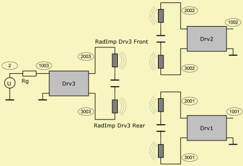

LE-Script used in Example "ABEC21 Sealed"

Def_Driver "SPH75"
Re=6.11ohm Le=0.2mH
fre=18.6kHz ExpoRe=1.633 ExpoLe=0.68
Mms=3.5g
fs=100Hz Qms=4.6 Qes=1.6
Def_Driver "SPW116"
Re=7.3ohm Le=0.435mH
fre=50kHz ExpoRe=3 ExpoLe=0.84
Mms=6g
fs=62Hz Qms=1.7 Qes=0.61
Def_Driving "Drving"
Value=1V IsRms
System "S1"
Resistor "Rg" R=0.3ohm Node=2=1003
Driver "Drv1" Def="SPH75"
Node=1001=0=2001=3001 DrvGroup=1001,1002
Driver "Drv2" Def="SPW116"
Node=1002=0=2002=3002 DrvGroup=2001,2002
Driver "Drv3" Def="SPW116"
Node=1003=0=2003=3003 DrvGroup=3001,3002
RadImp "RadImp Drv1 Front" Node=2001 DrvGroup=1001
RadImp "RadImp Drv1 Rear" Node=3001 DrvGroup=1002
RadImp "RadImp Drv2 Front" Node=2002 DrvGroup=2001
RadImp "RadImp Drv2 Rear" Node=3002 DrvGroup=2002
RadImp "RadImp Drv3 Front" Node=2003 DrvGroup=3001
RadImp "RadImp Drv3 Rear" Node=3003 DrvGroup=3002
|
Definition part of script. Driver components take reference to Def_Driver. Def_Driving specifies the value of the global source, at which all Systems are wired in parallel. The global source is a potential source with no generator resistance. Here the global source is a voltage source. Here begins the part, which sections are organized in Systems. Here we use only a single System. Only one network-node can be driven. In the script it is the one with the smallest node-index specified (Node=2). There are three Drivers. Two of them reference the same definition. The Driver-component obtains diaphragm information from the Boundary Element Script with the help of parameter DrvGroup=. The RadImp component features the lumped radiation impedances of the front and rear of the diaphragms. There are also mutual radiation impedance components. These are implemented automatic if applicable. In the above schematic they are not shown for the sake of clarity. DrvGroup= links the RadImp-component to the Boundary Element Script. |